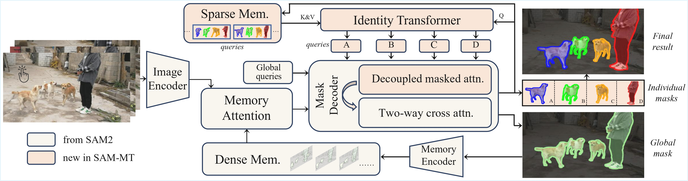
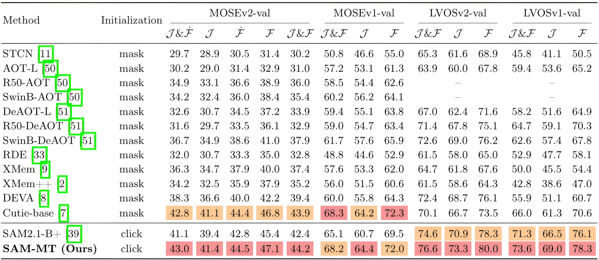
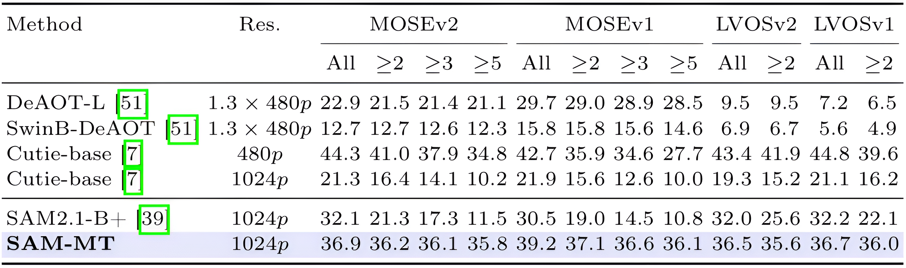
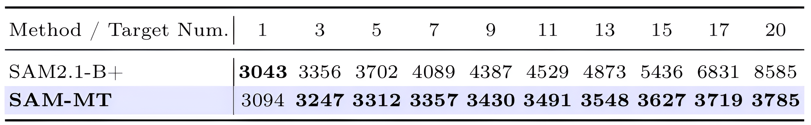

Interactive Demo
SAM-MT supports simple point-based multi-target initialization and real-time video segmentation.
Abstract
Modern video object segmentation tracks and segments user-specified targets. While recent approaches such as SAM2 achieve strong single-target performance, extending them to multi-target scenarios usually requires repeating object-wise propagation for each target, causing latency and memory usage to grow with target count. We present SAM-MT, a real-time interactive multi-target video segmentation framework built upon SAM2. SAM-MT represents the scene with shared global context and represents each target with lightweight explicit queries. It uses decoupled masked attention to prevent cross-target interference, a query-based sparse memory to preserve target identities over time, and an identity transformer for robust target re-identification. This design largely decouples latency from the number of targets, enabling real-time multi-target segmentation with robust video segmentation performance.
Architecture
SAM-MT converts SAM2 from object-wise propagation into a query-driven multi-target framework. Dense memory (of SAM2) is used only once to model the combined global context, while each individual target is represented by a compact target query. In the decoder, decoupled masked attention allows all target queries to access the shared global queries, but blocks direct attention between different targets. Across frames, historical target queries are stored in a FIFO sparse memory, and an identity transformer updates each target only from its own history to avoid identity drift.

Explicit target identity
Each user-specified target is represented by a lightweight query, avoiding repeated object-wise SAM2 propagation.
Identity-preserving attention
Different targets are isolated from each other to reduce cross-target interference, while still sharing global context.
Efficient temporal modeling
Queries are stored into sparse memory instead of pixel-level features, reducing per-target overhead for scalability.
Quantitative Results
SAM-MT achieves competitive video segmentation performance across VOS benchmarks. More importantly, it maintains real-time speed as the number of targets increases, such as sustaining 35+ FPS with 20 targets with low VRAM overhead.
VOS Performance

FPS vs. Number of Targets

VRAM vs. Number of Targets

Qualitative Results
SAM-MT tracks and segments many targets simultaneously while preserving individual identities in crowded scenes.

BibTeX
@inproceedings{SAMMT,
title={{SAM-MT}: Real-Time Interactive Multi-Target Video Segmentation},
author={Shen, Ruiqi and Liu, Chang and Ding, Henghui},
booktitle={European Conference on Computer Vision (ECCV)},
year={2026}
}